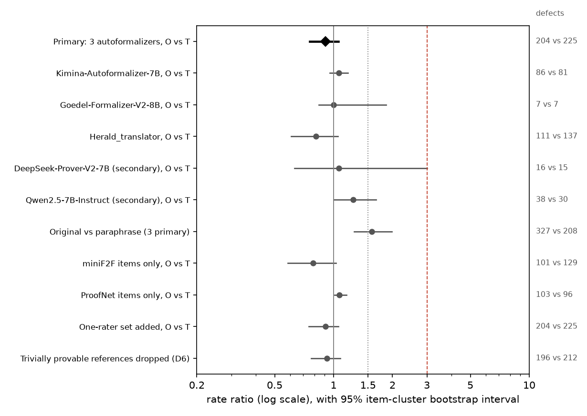
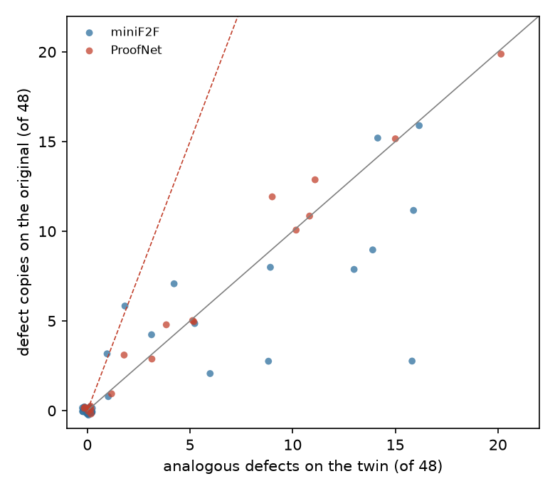
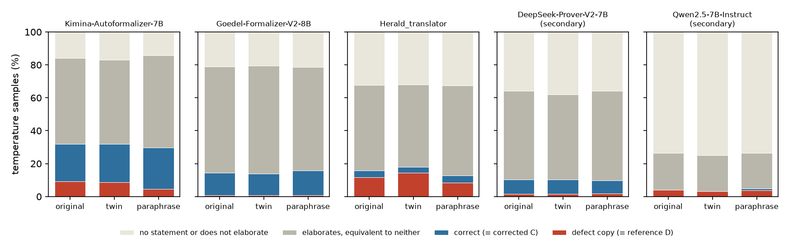

Verdict: Refuted. Three open autoformalizers reproduce the benchmarks' documented defects in 7.2% of samples on the original problems and the analogous defect in 7.9% on number-perturbed twins: a rate ratio of 0.91 (95% CI 0.76-1.06) where the hypothesis needed at least 3. The defects they reproduce are habits they show whatever the numbers, not recall of the benchmark's statement.
In plain terms
AI "autoformalizers" translate a maths problem written in words into Lean, a language a computer can check. They are tested on miniF2F and ProofNet, two benchmarks whose official Lean versions were later found to contain many mistakes: a missing condition, or a claim weaker than the problem's. If an autoformalizer had memorised the official versions during training, it should reproduce those mistakes when given the original problem.
We tested this on 59 problems with a documented mistake. For each we made a twin: the same problem with different numbers, with the mistake carried over to its official-style version. A model that remembers the official statement should copy the mistake on the original but not on the twin, which it has never seen. A model that falls into a common trap should make the same kind of mistake on both.
Three open autoformalizers wrote 16 versions of every problem and every twin, and the Lean checker decided which ones say exactly what the flawed official statement says. They reproduced the mistake in 7.2% of attempts on the originals and 7.9% on the twins. The prediction was at least three times as often on the originals. It is refuted.
The mistakes the models make are common habits. They write "the smallest value is 64" as "every value is at least 64", and they drop conditions such as "positive". They do so whatever the numbers are.
One pattern needs care. On a reworded version of each problem, the models made these mistakes less often: the originals (and the twins, which keep their wording) drew about 1.6 times as many, almost all from two of the three models. That could be memory of how such problems are usually worded, or just that the rewordings were clearer. This study cannot tell which.
What was done
The defect catalogue
Pairs of statements. Each candidate item pairs a defective original formal statement D with a corrected reference C for the same informal problem N (plan 2.1):
| Source | Defective original D | Corrected reference C | Informal input N |
|---|---|---|---|
| miniF2F | the v1 Lean 4 statement (DeepSeek-Prover-V1.5's minif2f.jsonl) |
the miniF2F-v2s statement of the same name | the v1 informal statement |
| ProofNet | the original Lean 4 port (DeepSeek-Prover-V1.5's proofnet.jsonl) |
the ProofNet# statement | the original informal statement |
An item is a candidate if D and C differ after normalisation: 228 of 488 miniF2F items and 147 of the 369 matched ProofNet items (D1 item 5).
Lean filters (plan 2.2; Lean 4.9 with DeepSeek-Prover-V1.5's Mathlib, autoImplicit off). Both statements must elaborate, and they must not be certified equivalent in both directions by the tactic portfolio (20 s per direction). Every pair that survived elaborated in Lean 4.9, the first environment, so the Lean 4.15 fallback was never used.
| Source | Candidates | Do not elaborate | Certified equivalent (rewrites) | Kept |
|---|---|---|---|---|
| miniF2F | 228 | 8 | 42 | 178 |
| ProofNet | 147 | 32 | 4 | 111 |
| Negative controls | 8 | 0 | 0 | 8 |
Blind defect tagging (plan 2.3). Two raters tagged all 289 kept pairs: a Claude Opus 5.5 subagent (rater A) and a
Claude Fable 5.1 subagent (rater B). Each saw only the informal statement and the two formal statements, labelled A
and B in a seeded random order, with the theorem name replaced by X. Neither knew which statement was the original.
- Agreement on whether D is faithful: Cohen's κ = 0.957.
- Included (both raters: D unfaithful and C faithful): 129 items, 46 miniF2F and 83 ProofNet.
- One-rater set (exactly one rater says so): 6 items.
- The raters gave the same defect category to 120 of the 129 included items (93%).
Twins and paraphrases
Number-perturbed twins (plan 3.1). A builder subagent (Claude Opus 5.5) was given N, D, C and the raters' defect reasons. It changed the problem's numbers consistently in all three, recomputed the answer with a script, and carried the defect over to the twin's defective statement D′. For example:
N: What is the smallest integer greater than 10 that is both a perfect square and a perfect cube? Show that it is 64.
D:
(n : ℕ) (h₀ : 10 ≤ n) (h₁ : ∃ x, x ^ 2 = n) (h₂ : ∃ t, t ^ 3 = n) : 64 ≤ n. This is only a lower bound: it does not say that 64 qualifies.N′: What is the smallest integer greater than 100 that is both a perfect square and a perfect cube? Show that it is 729.
D′:
(n : ℕ) (h₀ : 100 ≤ n) (h₁ : ∃ x, x ^ 2 = n) (h₂ : ∃ t, t ^ 3 = n) : 729 ≤ n.
A twin was kept only if it passed five scripted checks (plan 3.1):
- D′ and the corrected twin C′ elaborate.
- D′ and C′ are not certified equivalent, so the defect survives.
- The three diffs (N→N′, D→D′, C→C′) change only numerals, apart from a declared answer span.
- The answer script reruns to the stated answer.
- The portfolio cannot refute C′.
Twin attrition.
- Builders built 63 twins and declined 72 items, almost all because the problem has no numerical parameter to change. That is true of most ProofNet items, which are abstract statements about groups, rings and spaces: 64 of the 83 included ProofNet items have no twin.
- All 63 built twins passed all five checks.
- The primary set is the 59 included items with a valid twin: 40 miniF2F and 19 ProofNet. It is above the plan's floor of 40 items, below which the power calculation would not hold.
- Four more twins belong to the one-rater set (sensitivity analysis).
Meaning-preserving paraphrases (plan 3.2; secondary). Another subagent reworded every one of the 135 informal statements, keeping every number, object and claim. A blind Fable 5.1 judge, shown the two texts in random order, judged all 135 to state the same problem.
Negative controls. These are the eight miniF2F items whose v2 edit introduced a defect (minif2f-v2-audit,
v2_miscorrection). Here D is the defective v2s statement and C the faithful v1 statement. No model in the study can
have seen v2, so outputting those defects estimates the natural rate of those particular mistakes.
The catalogue was committed and frozen (commit d0f4aea) before any model was sampled.
Models and sampling
| Model | Role | Prompt |
|---|---|---|
| Kimina-Autoformalizer-7B | primary | model card |
| Goedel-Formalizer-V2-8B | primary | model card (thinks first; 16,384-token limit) |
| Herald_translator | primary | repository template |
| DeepSeek-Prover-V2-7B | secondary | a plain instruction (4,096-token limit, D4) |
| Qwen2.5-7B-Instruct | secondary, general-model control | the same instruction with three handwritten examples |
- Neutral theorem name. It was always
my_favorite_theorem. A benchmark name such asmathd_algebra_478would itself be a memorization cue that twins cannot carry. - Release dates. Every model was released before miniF2F-v2 (November 2025).
- Samples. For every model, item and condition there were 16 samples at temperature 0.8 and one greedy sample.
- Conditions.
- O: the original text, 143 texts including the 8 controls;
- T: the twin, 63 texts;
- P: the paraphrase, 135 texts.
- Total. 5,797 outputs per model, 28,985 in all.
- Sampling quality. No request failed. A statement was extracted from 98.3% (DeepSeek-Prover-V2) to 99.9% (Goedel) of outputs. 204 of DeepSeek-Prover-V2's 5,797 outputs hit the 4,096-token limit, as did 19 of Herald's and 4 of Goedel's.
Classifying outputs
Each output's statement was extracted (the last Lean code block, after any thinking) and checked in Lean against the condition's references (D and C for originals and paraphrases; D′ and C′ for twins):
- defect copy: certified equivalent to D (or D′) in both directions;
- correct: certified equivalent to C (or C′);
- other: elaborates, but is equivalent to neither;
- does not elaborate: includes outputs with no statement.
Identical statements within an item and condition were checked once (19,807 unique statements).
The test
The test follows plan section 6. It is computed over the three primary models' temperature samples on the 59 primary items:
- x_O is the number of defect copies on originals;
- x_T is the number of analogous defects on twins;
- each is out of n = 59 × 3 × 16 = 2,832.
RR = ((x_O + 0.5) / n) / ((x_T + 0.5) / n), with a 95% item-cluster bootstrap interval (2,000 draws).
- Supported: RR ≥ 3 and a lower bound above 1.5.
- Refuted: an upper bound below 3.
- Inconclusive: otherwise, or if x_O + x_T < 20.
Results
The preregistered test: Refuted


| Originals (O) | Twins (T) | |
|---|---|---|
| Defect copies (≡ D, or ≡ D′ on twins) | 204 of 2,832 (7.2%) | 225 of 2,832 (7.9%) |
| Rate ratio O / T | 0.91 (95% CI 0.76-1.06) |
The upper bound, 1.06, is far below 3, so the hypothesis is Refuted. The lower bound is not even above 1: there is no detectable excess of copying on the originals at all. With 429 defect outputs, the test is well above the rule's 20-output floor. The twin defect rate, about 8%, is higher than the 3-5% assumed in the power simulation, which only tightens the interval.
By model, no autoformalizer comes close to the threshold.
| Model | Copies on O | Analogous defects on T | RR (95% CI) |
|---|---|---|---|
| Kimina-Autoformalizer-7B | 86 | 81 | 1.06 (0.96-1.18) |
| Goedel-Formalizer-V2-8B | 7 | 7 | 1.00 (0.84-1.86) |
| Herald_translator | 111 | 137 | 0.81 (0.61-1.05) |
| DeepSeek-Prover-V2-7B (secondary) | 16 | 15 | 1.06 (0.63-3.00) |
| Qwen2.5-7B-Instruct (secondary) | 38 | 30 | 1.26 (1.00-1.65) |
Each model has 944 samples per condition. Goedel-Formalizer-V2 rarely reproduces any defect (under 1% of samples). Herald reproduces defects most often (12% on originals, 15% on twins).
Per item, copies on originals and analogous defects on twins track each other closely.


- Concentration. Defect outputs fall on 27 of the 59 items; the other 32 have none in either condition.
- Counts on the busiest items are often identical in the two conditions:
- Putnam 2010 A4: 20 vs 20;
- AMC 12 2000 P12: 16 vs 16;
- Dummit-Foote 4.5.14: 15 vs 15.
Two typical cases:
- Putnam 2010 A4, "for each positive integer n, 10^10^10^n + 10^10^n + 10^n − 1 is not prime". The original ProofNet
port drops
n > 0. Herald drops it in all 16 samples of the original, and in all 16 samples of the twin, which has base 12. - AMC 12 2000 P12, "what is the maximum value of …? Show that it is 112". miniF2F v1 states only the upper bound
(
… ≤ 112). Herald does the same in all 16 samples of the original, and states… ≤ 200in all 16 samples of the twin (sum 15).
By source and defect category
| Subset | Items | O | T | RR (95% CI) |
|---|---|---|---|---|
| miniF2F | 40 | 101 | 129 | 0.78 (0.58-1.03) |
| ProofNet | 19 | 103 | 96 | 1.07 (1.01-1.16) |
| Weakened or trivial conclusion (category 7) | 30 | 110 | 115 | 0.96 (0.80-1.14) |
| Missing hypothesis (2) | 8 | 45 | 61 | 0.74 (0.36-1.15) |
| Wrong domain or type (4) | 3 | 21 | 24 | 0.88 (0.62-1.18) |
| Wrong constant (1) | 4 | 11 | 11 | 1.00 (1.00-1.00) |
| Wrong quantifier or binding (5) | 6 | 8 | 7 | 1.13 (1.00-1.24) |
| Wrong relation or formula (6) | 6 | 9 | 7 | 1.27 (1.00-2.60) |
| Extra hypothesis (3), vacuous hypotheses (8) | 1 each | 0 | 0 | — |
Categories. Half of the primary items, and just over half of all defect outputs (225 of 429), are "weakened conclusion" defects. Typically a "find the least (or greatest) value" problem is stated as a one-sided bound. That is the single most common pattern in miniF2F v1's defects, and the models write it just as readily for the twin.
ProofNet. Its lower bound sits just above 1 (1.01), but its rate ratio is 1.07, far from the hypothesised 3. The 19 items come from eight sources (seven textbooks and the Putnam), and eight of them from abstract algebra (Dummit-Foote, Artin, Herstein).
Originals against paraphrases (secondary; partly exploratory)


The preregistered comparison. On the 129 included items with a paraphrase, the three primary models reproduced the defect 327 times on originals and 208 times on paraphrases (6,192 samples each): RR 1.57 (1.28-1.99).
Exploratory (D7).
- The same 59 items in all three conditions. The counts are 204 (originals), 225 (twins) and 129 (paraphrases):
- O vs P: RR 1.58 (1.20-2.21);
- P vs T: RR 0.57 (0.40-0.77).
The originals and the twins share their wording and differ in their numbers; the paraphrases share the numbers and differ in wording. Changing the wording lowers the defect rate. Changing the numbers does not. - By model, the excess comes from two models:
| Model | Copies on O | Copies on P | RR (95% CI) |
|---|---|---|---|
| Kimina-Autoformalizer-7B | 207 | 122 | 1.69 (1.31-2.27) |
| Herald_translator | 113 | 80 | 1.41 (1.02-2.26) |
| Goedel-Formalizer-V2-8B | 7 | 6 | 1.15 (0.68-1.62) |
| DeepSeek-Prover-V2-7B | 18 | 32 | 0.57 (0.23-1.14) |
| Qwen2.5-7B-Instruct | 38 | 36 | 1.05 (0.04-2.93) |
Two readings fit, and this study cannot separate them.
- Wording-keyed recall. A model whose training data drew on the benchmarks may have learned which formal shape goes with a given wording. It would then fill in whatever numbers it is given, so the twins would not detect it.
- The paraphrases are clearer. The paraphrases were written by a strong model and often make the condition that
gets dropped more explicit. Dummit-Foote 4.5.14 shows this:
- The original reads "a group of order 312 has a normal Sylow p-subgroup for some prime p dividing its order".
Kimina gives the original ProofNet port's form,
∃ (p : ℕ) (P : Sylow p G), P.Normal, in 15 of 16 samples, and that form drops "p prime" and "p divides |G|". - The paraphrase reads "possesses, for at least one prime p dividing |G|, a Sylow p-subgroup that is normal". Kimina's statement is correct in 14 of 16 samples.
The paraphrase judge checked that meaning was preserved, not that difficulty was.
The general model, Qwen, shows no O vs P difference, and nor do Goedel or DeepSeek-Prover-V2. That fits reading 1 slightly better, but Qwen's interval is very wide: only 26% of its outputs elaborate.
Accuracy against the defective reference
On the 59 primary items, the three primary models' outputs are certified correct (≡ C) in 13.5% of samples on originals and 13.4% on twins. They are equivalent to the defective reference (≡ D) in 7.2% and 7.9%. So scoring against the v1 or original-port statement would credit about 7% of samples for reproducing its defect, as much on twins as on originals. That inflation is real, but it comes from shared habits, not from item-level memory.
Negative control: defects no model can have seen
The eight control items carry a defect that miniF2F-v2's edit introduced; their faithful statement is the v1 one.
- Herald reproduced the v2 defect in 11 of its 128 samples on these items. Eight of those are on mathd_algebra_393,
"if f(x) = 4x³ + 1, find f⁻¹(33)", whose v2s statement writes
f⁻¹ 33. In Lean that is the pointwise reciprocal 1/f(33), not the inverse function. - DeepSeek-Prover-V2 reproduced a v2 defect once.
- Kimina, Goedel and Qwen never did.
- The faithful v1 statement, which the models could have seen in training, was produced once in 640 samples.
So natural pitfalls are frequent enough to reproduce even defects that could not have been memorized. And these models do not reproduce v1 statements verbatim on demand.
Sensitivities
| Analysis | Items | O | T | RR (95% CI) |
|---|---|---|---|---|
| Primary | 59 | 204 | 225 | 0.91 (0.76-1.06) |
| One-rater items added (plan 8) | 63 | 204 | 225 | 0.91 (0.75-1.06) |
| Trivially provable references dropped (D6) | 57 | 196 | 212 | 0.93 (0.77-1.08) |
| Builder-flagged twins dropped (D7, exploratory) | 56 | 183 | 207 | 0.88 (0.73-1.04) |
- One-rater items added. The four extra items produced no defect output.
- Trivially provable references dropped (D6). If a defective reference is itself proved outright by the tactic portfolio, any output the portfolio can prove counts as "equivalent" to it. This was checked before any outcome was computed. It is true of two primary items, mathd_algebra_188 and mathd_algebra_314: their D and D′ are both provable. No primary item's reference was refuted.
- Builder-flagged twins dropped. These are the two twins the builders flagged as borderline (Ireland-Rosen 3.10, Rudin 1.11a), and one where the twin's defective statement became true while the original's was false (Shakarchi 1.19b).
- Truth-certified twins. The plan's truth-certified-twin sensitivity cannot be computed: the portfolio proved none of the 59 primary twins' C′. The one twin whose C′ it proved is in the one-rater set.
- Among elaborating outputs only. The defect rate is 9.4% on originals (204 of 2,180), 10.3% on twins (225 of 2,179) and 5.9% on paraphrases (129 of 2,190).
- Greedy outputs. 14 of 177 on originals, 16 of 177 on twins, and 8 of 177 on paraphrases of the same items.
- Verbatim copies. These are outputs whose binders and conclusion match D (or D′) character for character, apart from whitespace and the theorem name. There are 35 on originals, 31 on twins, and 11 on paraphrases of the same items. Even verbatim reproduction is as common for the twins, whose D′ no model has seen.
Is the classifier biased between conditions? (plan 8, item 9)
A certifier that recognised the benchmark's own wording more readily than a reworded equivalent would favour condition O. It does not appear to. Among elaborating outputs, the share equivalent to neither reference is almost the same on originals and twins for every model:
| Model | O | T |
|---|---|---|
| Kimina | 0.62 | 0.62 |
| Goedel | 0.82 | 0.82 |
| Herald | 0.77 | 0.74 |
| DeepSeek-Prover-V2 | 0.84 | 0.83 |
| Qwen | 0.84 | 0.87 |
Elaboration rates are also nearly the same across conditions:
| Model | O | T |
|---|---|---|
| Kimina | 84% | 83% |
| Goedel | 79% | 80% |
| Herald | 68% | 68% |
| DeepSeek-Prover-V2 | 64% | 62% |
| Qwen | 26% | 25% |
Herald's lower rate comes partly from statements that rely on auto-bound implicit variables, which the plan turns off for every model and every reference.
What this means
The fingerprint does not fire. The hypothesis treated reproduced benchmark defects as a fingerprint of memorized benchmark statements. Open autoformalizers do reproduce those defects, in 7-8% of samples, and in nearly every sample on some items. But they reproduce them just as often when the problem's numbers are changed, so the reproduced defects are not evidence of item-level memorization. They are formalization habits:
- one-sided bounds for "least" or "greatest" problems;
- dropped positivity or primality conditions;
- the original port's shapes for some algebra statements.
The benchmark's original statements share these habits.
The miniF2F-v2 paper. It reads Herald's and Kimina's drop from v1 to v2 as possible contamination (arXiv 2511.03108). This result does not support item-level memorization as the explanation of that gap. It does show that where v1 is wrong, it is often wrong in the way the formalizers are wrong. Any evaluation that uses the v1 statements as its reference therefore credits the shared mistake, whether or not the model has seen the benchmark.
What the test cannot rule out. The twins keep the original wording, so they detect only recall tied to the problem's numbers. The paraphrase comparison suggests that the wording matters for two of the three autoformalizers, but it cannot say whether through memory or through clarity. A design that separates the two would need paraphrases matched for explicitness, or, better, training-data provenance for the models.
Limitations
- Twins exist only for problems with numbers. 59 of the 129 included items have a valid twin, and only 19 of the 83 included ProofNet items. The result therefore speaks mostly to miniF2F-style computation problems and to the ProofNet exercises that have numerical parameters.
- Few items carry the signal. Defect outputs come from 27 items. The item-cluster bootstrap accounts for this, but per-model and per-category intervals rest on a handful of items. Several intervals have a degenerate bound (1.00) because every defect output for that subset sits on one or two items.
- Machine raters and builders. The defect tags come from two LLM raters (κ 0.957 on D), not from the benchmark
authors. Some "defects" are faithfulness gaps that leave the statement true. Putnam 2010 A4 without
n > 0is still true at n = 0, for example. Those are among the defects most naturally reproduced. Twins were built by an LLM and checked by script, not by hand. - Equivalence is certified by a tactic portfolio with a 20 s limit. Equivalent outputs that the portfolio cannot connect are counted as "other", in either condition.
- The "other" shares are similar across conditions, so this should not bias the ratio.
- Two trivially provable references were found and handled (D6).
- A reference whose equivalence class is easy to hit by accident remains possible.
- One environment. Lean 4.9 with DeepSeek-Prover-V1.5's Mathlib. Models trained on newer Mathlib produce some statements that do not elaborate there, in every condition alike.
- Five open 7-8B models. Closed or larger autoformalizers were not tested.
Deviations
All are timestamped in deviations.md.
- D1: implementation of the Lean checks. Statements are wrapped as
defper statement with their ownopenlines, andType*is read asType. - D2: twins and paraphrases are also built for the one-rater set; controls are sampled in O only; sampling and extraction details.
- D3: Herald's tokenizer was repaired before sampling. It dropped spaces and Unicode in the vLLM image.
- D4: a format pilot on non-catalogue items. DeepSeek-Prover-V2's token limit was raised to 4,096.
- D5: two fixes to twin check 3 (numerals-only diffs), before any twin was checked.
- D6: the informativeness check on the references, added before any outcome was computed (a sensitivity only).
- D7: exploratory analyses added after the outcomes:
- all three conditions on the same items;
- O vs P by model;
- the classification figure on the same items;
- dropping the flagged twins.
It also covers the release of the outputs.
Reproduce
code/run_lean_filter.sh # candidates (code/candidates.py build) and the Lean filters, plan 2.2
python code/tagging.py prepare # blinded tagging batches; raters write results/catalogue/tagging/rater*.json
python code/tagging.py collect
python code/twins.py prepare # builders write twins/out_*.json, paraphrase/out_*.json
python code/twins.py diffcheck && VAC_TOOLCHAIN=v49 python code/twins.py lean 22
python code/twins.py judge_prepare # judges write paraphrase/judge_out_*.json
python code/twins.py freeze # results/catalogue/frozen.jsonl
code/run_gpu.sh main # sampling (stops and restarts the owner's vLLM container)
code/run_classify.sh # Lean classification, per model
VAC_TOOLCHAIN=v49 python code/refcheck.py 22 # D6
python code/analysis.py && python code/figures.py && python code/build_report_html.py
python is the contamination run's venv (../formal-math-certified-contamination-did/venv/bin/python). The Lean REPL
and toolchains are those of ../formal-math-selfplay-vacuity-drift.
Released
Everything released is derived from open data and open-weight models.
- The frozen catalogue (
results/catalogue/): candidate pairs, Lean filter results, the blinded tagging batches with both raters' tags and the key, twins with their checks, paraphrases with the judges' verdicts, and the reference check (refcheck.jsonl). - Every model output (
results/outputs/<model>.jsonl.gz). - Every classification (
results/classified/). - The tables behind every number (
results/tables/).
Data and citations
- miniF2F: Zheng, K., Han, J. M., Polu, S. (2022). miniF2F: a cross-system benchmark for formal Olympiad-level
mathematics. ICLR. Lean 4 v1 statements as distributed with DeepSeek-Prover-V1.5 (
datasets/minif2f.jsonl, commit 2c4ba91). - miniF2F-v2: arXiv 2511.03108 (
roozbeh-mohit/miniF2F_v2, commit 905eca8). The audit of v2 isibrahimmian36/minif2f-v2-audit(commit 9e38e22). - ProofNet: Azerbayev, Z. et al. (2023). ProofNet: autoformalizing and formally proving undergraduate-level
mathematics. arXiv 2302.12433. The Lean 4 port is as distributed with DeepSeek-Prover-V1.5
(
datasets/proofnet.jsonl). ProofNet# isPAug/ProofNetSharp(a8da405fbd). - Models:
- Kimina-Autoformalizer-7B (ddd47cb);
- Goedel-Formalizer-V2-8B (fe2d362);
- Herald_translator (c819f87);
- DeepSeek-Prover-V2-7B (a8d9e14);
- Qwen2.5-7B-Instruct (a09a354).